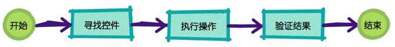
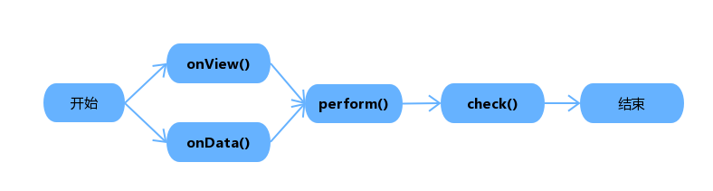
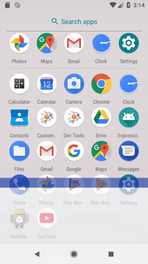

Espresso 是基于 ATSL(Android Testing Support Library) 的Android 设备化测试框架，它只能在单独apk内部进行测试而不能和其它应用进行交互，它可以检查应用的 UI 组件是否正确工作。
前面有文章介绍了 UI Automator 测试框架，该框架在多个应用之间进行交互测试，而 Espresso 框架则正好相反，它是在单独的应用内部进行测试。在单独的应用内部进行测试可以确保该应用可以在没有其它应用交互的情况下正常工作，并且不会给用户带来很糟糕的体验。
Espresso 框架相对于 UI Automator 框架主要有以下几个优点：
- 速度快；
- UI 线程等待：Espresso 测试框架在测试进行的过程中检测主线程是否处于空闲状态，它会等到主线程空闲的时候才会进行测试，提升测试的稳定性。
当然 Espresso 测试框架相比于UI Automator 框架也有其缺点存在：
- 依赖业务代码：Espresso 测试用例代码要和被测试的 apk 业务代码放在一起；
- 签名一致：Espresso 框架进行测试的时候测试 apk 和业务 apk 签名必须保持一致；
- 前期编译生成 apk 时间较长：UI Automator 框架可以只单独编译测试 apk，而 Espresso 则需要同时编译被测 apk 和测试 apk，编译时间相对较长，尤其在业务代码量较大时，编译时间就更不用说了；
Espresso 测试框架必须在 Android 2.2(API10) 以上运行。
Espresso 环境搭建
要使用 Espresso 框架进行编写测试用例并进行软件测试，必须要在 build.gradle 文件中添加相应的依赖。新版本的 Android Studio 在新建工程的时候会默认添加该依赖包，如果对已有工程进行测试，则需要添加以下依赖包到 dependencies闭包下：
dependencies { |
除了添加Espresso依赖包，还需要添加 instrumentation runner, 在 android.defaultConfig闭包中添加如下内容：
testInstrumentationRunner "android.support.test.runner.AndroidJUnitRunner" |
Espresso 框架除了可以做基本功能测试，还可以做 intent 测试，如需进行 intent 测试，则需要添加如下依赖：
dependencies { |
Espresso 基本组件及使用
总的来说，UI 测试或者功能测试用例执行都遵循以下流程：

无论是UI Automator 还是 Espresso 框架都是经过寻找控件、执行操作、验证结果来保证一个测试用例的完整性。
基本组件
对Espresso 来说，对这三个阶段分别提供了不同的 API 组件：
ViewMatchers- 匹配器，该类内部提供了如withId、withClassName等匹配器方法用来在当前布局树中查找控件；ViewActions- 操作类，该类内部提供了很多操作控件的方法，例如click()、swipDown()、pressKey()等方法在测试用例执行过程中对控件进行操作；ViewAssertions- 验证类，该类中的方法比较少，主要有doesNotExist()、matches()方法，用来对控件的操作结果进行验证；
除了以上三个组件以外，Espresso 还提供了一个类来作为与视图的交互入口点：
Espresso- 视图交互入口点，视图交互的方法主要有两个，分别为onView()和onData()，这两个方法是搭配ViewMatches类的方法来进行查找控件的。除此之外还提供了一些和设备进行的交互的方法，例如：pressBack()、closeSoftKeyboard()等;
onView()方法主要用于查找诸如TextView、Button等的普通控件；而onData()用来查找AdapterView，主要有ListView等。
ViewInteraction
ViewInteraction 可以看作是查找、操作、验证三个步骤的连接点，该类常用的两个方法有：
perform()- 配合ViewActions对控件进行操作，该方法的参数为一个或多个ViewAction对象，返回值为返回一个ViewInteraction对象；check()- 配合ViewAssertion对操作结果进行验证，该方法参数为一个ViewAssertion对象；
onView()和onData() 两个方法都会返回一个ViewInteraction对象，所以这两个方法可以和perform()、check() 两个方法连起来使用：

写法如下：
onView(withId(R.id.text_view)).perform(click()).check(matches(isDisplayed())); |
两个常见的异常
-
AmbiguousViewMatcherException- 当前条件匹配到多个控件时，会抛出该异常； -
NoMatchingViewException- 当前条件在当前界面匹配不到控件时，会抛出异常；
使用方法
查找控件
Espresso控件使用onView()和onData()方法进行查找控件，这两个方法的区别在于onView()方法主要用于查找诸如TextView、Button等的普通控件；而onData()用来查找AdapterView，主要有ListView、Spinner、GridView 等。这两个方法都需要搭配 Harmcrest 匹配器在当前界面中寻找唯一的控件。
Espresso 可以借助控件 id 进行控件查找，使用方法如下：
onView(withId(R.id.view_id)); |
使用方法和被测试代码中的引用是一样的，但是假如界面上有两个相同 id 控件时，该控件在当前界面中不具有唯一性，则测试用例会抛出AmbiguousViewMatcherException异常，此时需要借助allOf()匹配器，使用多个条件限制该控件，使之具有唯一性，例如：
onView(allOf(withId(R.id.view_id), not(withText("Not View Text")), ...)); |
可以同时使用多个条件并且搭配 Harmcrest 匹配器方法进行限制该控件，但是建议使用尽可能少的条件进行寻找控件，以减少不必要的查找。
onData()方法使用方法基本和onView()方法类似，假设一个 AdapterView 的每一行的填充数据为Map<String key, String value>,其中有一条数据如下：
{"key": "espresso", "value", "fase"} |
则可以使用如下代码来寻找上述数据所在的 item 并点击：
onData(allOf( |
也可以把上述allOf()所包含的条件写成自定义的 Matcher，优化代码：
public static Matcher<Object> mapValueMatcher(final String expectedText) { |
上述用例代码可以简写成：
onData(mapValueMatcher("fast")).perform(click()); |
RecyclerView和普通的 AdapterView 在执行操作的时候有所不同，onData()方法不能查找其内部的控件，需要使用onView()方法。
执行操作
按之前描述的步骤，寻找到控件之后就时对该控件进行模拟用户操作。Espresso 提供了perform()方法对控件进行操作，该方法需要传输至少一个ViewAction对象，当传多个代表动作的参数时，会按照参数的先后顺序执行一系列动作。例如：
onView(withId(R.id.view_id)).perform(scrollTo(), click(), typeText("Test Text"), closeSoftKeyboard(), ...); |
RecyclerView和普通的 AdapterView 在执行操作的时候也有所不同。对RecyclerView执行需要使用espresso-contrib包下的RecyclerViewActions类，该类下提供了一系列方法可以对 RecyclerView 进行滚动或者执行操作。
scrollTo()- 滚动到匹配的 ViewscrollToHolder()- 滚动到匹配的 View HolderscrollToPosition()- 滚动到固定位置actionOnHolderItem()- 对匹配到的 View Holder 执行 ViewActionactionOnItem()- 对匹配到的 View 执行 ViewActionactionOnItemAtPosition()- 对固定位置的 View 执行 ViewAction
onView(withId(R.id.recyclerView)) |
进行验证
Espresso 在通过 perform() 执行一系列方法之后需要使用check()方法来对当前控件的状态进行验证，常用的判断方法时matchers()，该方法接收一个ViewMatcher参数，该参数可一使用allOf()或者anyOf()添加多个条件进行验证。例如：
onView(withId(R.id.view_id)) |
当确定一个 AdapterView 控件在当前布局中，但是使用 onView()方法抛出NoMatchingViewException 时最常见的解决方法是使用onData()方法。
一个简单的栗子
是时候举个栗子了！ 用例很简单，实现一个“伪”登陆界面。为什么时“伪”的呢，因为账号和密码不会验证，直接会传到第二个界面并且在界面上显示出来。源代码很简单，只有两个 Activity，一个登陆界面，可以输入邮箱、密码，并有登陆按钮，点击该按钮之后，跳转到第二个Activity，并在该界面上显示刚输入的用户和密码。
测试用例代码如下：
private static final String EMAIL = "istarx@163.com"; |
运行过程如下：

Espresso-Intents
Espresso-Intents是 Espresso 的扩展，是对 intent 的发送进行测试。假如被测试应用和别的应用有很多和 intent 相关的交互，则可以利用 Espresso-Intent 进行测试，以保证应用内部的逻辑没有问题。Espresso-Intents 测试是假设和被测试应用有 intent 交互的应用都是正常工作的。Espresso-Intents 可以检测被测试应用是否正确的发送 intent 或者 是否正确的接收到 intent。
使用 Espresso-Intents 必须要在 build.gradle文件中添加以下依赖：
dependencies { |
Espresso-Intents 提供了ìntended()和intending()两个方法来对 intent 进行测试，这两个方法的参数都是Matcher<Intent>类型的。该 Matcher 可以使用自带的，也可以通过实现接口来构建自定义的 Matcher。
还是对上文的例子进行测试，测试用例如下：
|
intending和 Mock.when() 有点类似，意思是当 xxx 的时候做什么，例如，当当前是向 cc.istarx.espressodemo 发送的 intent ,则返回特定的 response。其使用配合 startActivityForResult()测试和其它应用交互。
在本例子中，在第一个 Activity 中点击 Intenting test的按钮，会从 IntendingTestActivity 返回一个字符串，并显示在Button下方的TextView上。测试如下：
-
首先需要建立一个response：
Intent resultData = new Intent();
String testStr = "Intending test string for test...";
resultData.putExtra("test", testStr);
Instrumentation.ActivityResult result =
new Instrumentation.ActivityResult(Activity.RESULT_OK, resultData); -
接着需要对对应的 intent 进行stub：
intending(toPackage("cc.istarx.espressodemo")).respondWith(result);
-
操作并验证
onView(withId(R.id.intending_button)).perform(click());
onView(withId(R.id.result_text)).check(matches(allOf(isDisplayed(),withText(testStr))));
本文示例地址：Espresso Test Demo